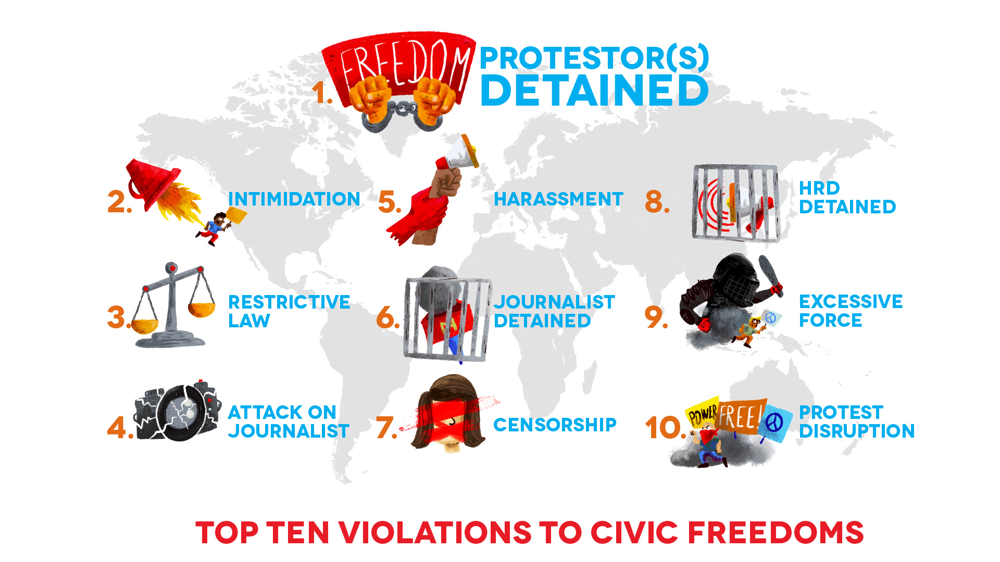

Civic Space Restrictions
Covid-19 Or Business As Usual?
Almost two years have passed since COVID-19 started to spread, changing the world as we know it. Although many of the present economic, social and political challenges existed before the pandemic, they have been exacerbated by it.
It might feel that the world stopped, at least for a while, in an attempt to reduce the spread of the virus. But soon it became apparent that many authoritarian governments, as well as some more democratic ones, had not fully taken to addressing one of the world’s biggest health emergencies. Instead, some of them seized upon the opportunity to further entrench their power, by holding elections that were neither free nor transparent, extending governmental term limits and passing laws to undermine and limit the space for dissent. In the context of a health emergency, they continue to restrict – beyond what is permissible under international law – people’s right to expression and peaceful assembly, continuing the repressive patterns documented in 2020.
While the pandemic has offered a new pretext, governments continue to use similar tactics of repression in their attempts to stop activism, silence critical voices and crush dissent.
Detentions on the rise
Among the tactics most documented during the reporting period is the detention of protesters, HRDs and journalists. Arbitrary detention is a blatant violation of personal liberty, but in the context of the pandemic, the consequences of arbitrary detention and criminalisation could be life threatening due to the increased risk of the virus spreading in confined, crowded spaces.
As protests continue to take place amidst a global pandemic, authorities in several countries were determined to disperse and prevent any form of protest. The CIVICUS Monitor documented many instances of protesters being detained while making demands for fundamental rights.
In Panama, police used excessive force and detained protesters who demanded a more just distribution of education benefits. In Colombia, people took to the streets in response to tax increases. Thousands were detained as part of a harsh crackdown against protesters.
Even in the run-up to the COP26 climate summit, the repression of environmental activists continued: during the past year, we documented cases of protesters being detained in Canada, Germany, Norway and the USA, among other countries.
Calls for better governance and free and transparent elections also brought people to the streets, particularly in Africa where we documented many protests being dispersed and cases of protesters being locked up, including in Chad, Ghana, Guinea, Niger and Uganda.
In some cases protests did not have to be mass mobilisations to attract restrictions. Sometimes a single peaceful protester holding a sign was detained, as documented in Nicaragua and Singapore.
The detention of protesters took place regardless of the underlying level of freedom experienced by civil society. However, our data indicated this to be one of the main tactics used especially in countries classed as having narrowed civic space as documented in North Macedonia, The United Kingdom, France, Ghana and Argentina, among others countries.
HRDs were also often the target of arbitrary detention, despite calls by international bodies and CSOs to release those in prison for their activism to reduce their chances of contracting COVID-19. Governments largely ignored these demands.
In Myanmar, thousands have been arbitrarily arrested and detained and hundreds of protesters killed since the coup in February 2021. In Cuba, where detention is a long-established tactic systematically used by the government, this year saw a crackdown on dissent, particularly against members of the Movimiento San Isidro, an artists’ collective that campaigns for freedom of expression. Nicaragua escalated the incarceration of HRDs in the context of its fraudulent elections to prevent any opposition. After the Taliban takeover, Afghanistan HRDs found themselves more vulnerable as attacks have been on the rise. For example, a staff member of a Kabul-based CSO was arrested by the Taliban, and severely beaten. Venezuela, a country facing a severe humanitarian crisis as a result of its political crisis, jailed humanitarian workers trying to provide services for those most in need.
The detention of HRDs is most often taking place in countries where their work is most needed: where civic space is rated as repressed or closed.
Similarly, journalists continued to face detention for reporting on critical issues about the government, including in Jordan, where a journalist and cartoonist was arrested over a cartoon criticising the recent deal between Israel and the United Arab Emirates (UAE), and in Somalia. The mishandling of the migrant and refugee situation has also proved a sensitive issue for some governments, who have jailed journalists who tried to report on it, including in Bosnia and Herzegovina and Greece.
Journalists covering protests have been arbitrarily detained in many countries, including Argentina, Greece, India, Panama, Tunisia and the USA.
Intimidation and harassment, often perceived as more subtle tactics of repression, also ranked among the top five commonly used tactics by governments and non-state groups and individuals; such tactics carry additional danger in that they often prepare the ground for more violent forms of repression.
Partly as a result of the pandemic, this year also saw the proliferation of legislation that aims to further restrict civic freedoms. In particular, there was a spike in the proposal, passing or amendment of laws with the stated aim of tackling disinformation; most of these laws do not comply with international human rights law and in practice they often work to criminalise expression.
While civic space continues to deteriorate globally, the last year also shows how resilient is civil society in operating even in difficult contexts as, against all odds, HRDs, activists, protesters and journalists continued to fight for and claim rights.

Regional Similarities and Differences
Across the five regions covered by our analysis, we see common trends, but also some regional differences. For instance, in Africa, the detention of journalists is the most commonly documented civic space violation. In the Americas, the intimidation and detention of protesters are the most frequently reported violations. In Asia and the Pacific, the most commonly documented tactic is restrictive legislation. Detention of protesters tops the list in Europe and Central Asia. In the Middle East and North Africa (MENA), the most frequently reported violation is the detention of HRDs.